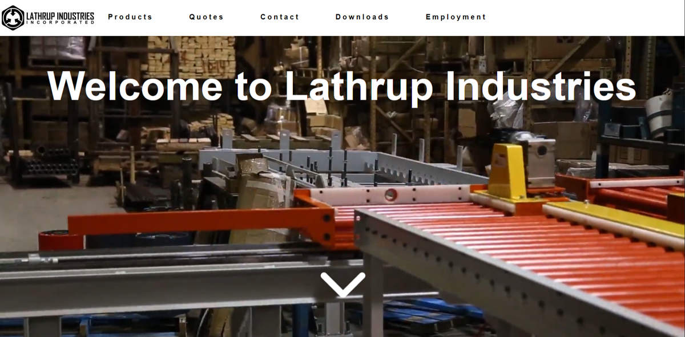
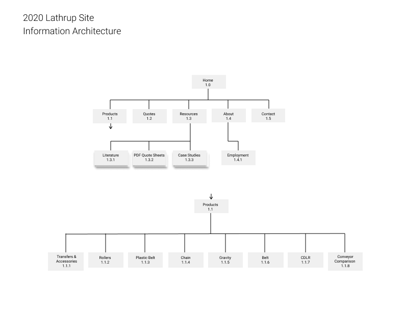
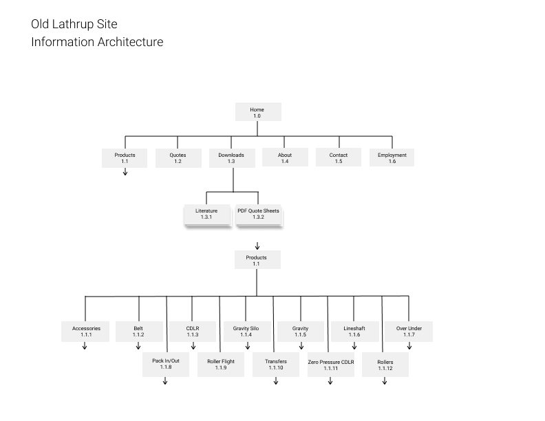
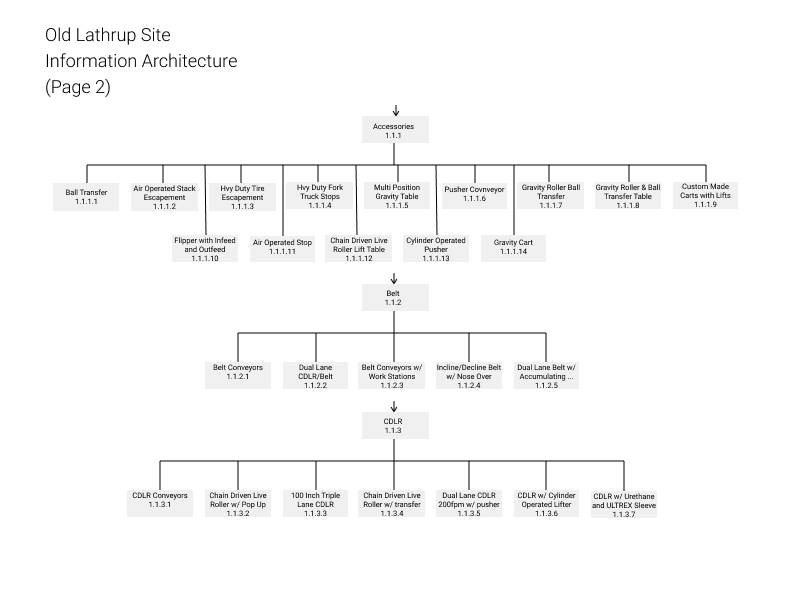
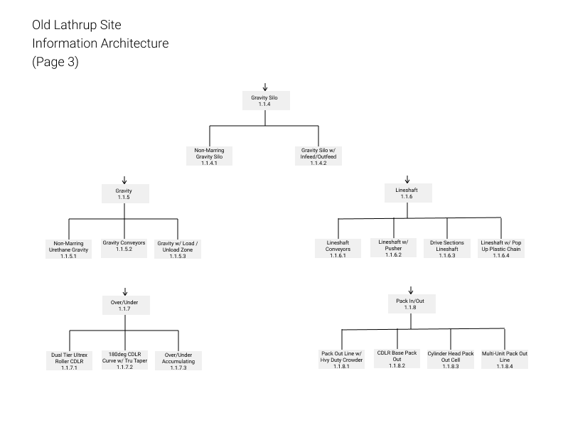
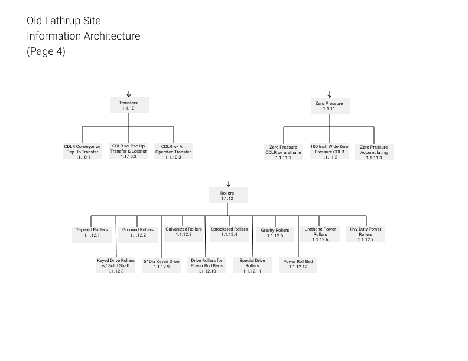
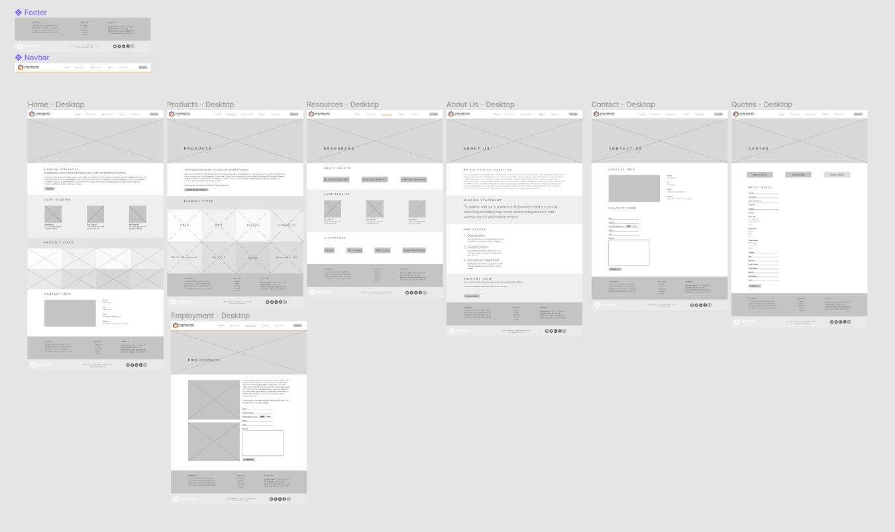
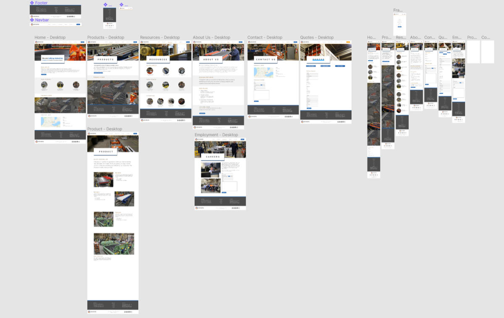
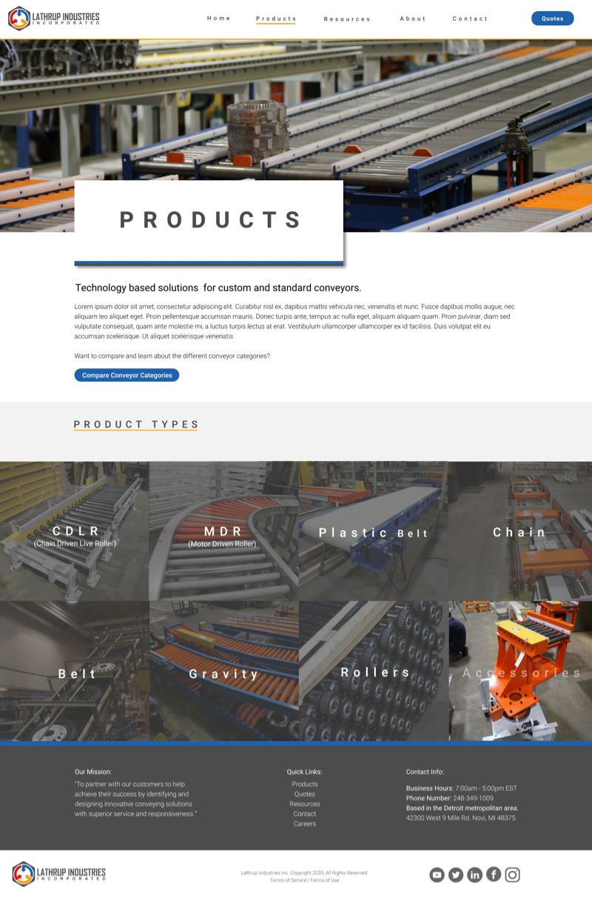
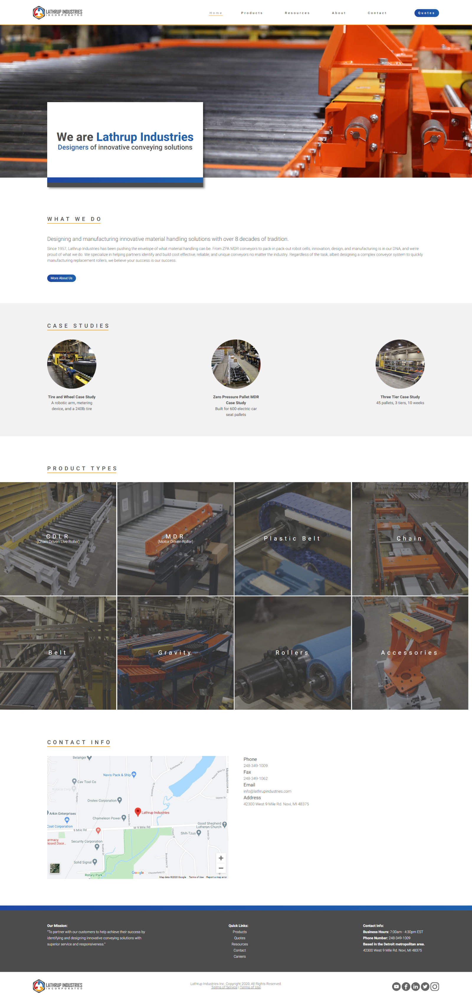

The Lathrup Industries website serves as a tool for promoting the company, connecting with customers, providing examples of solutions and products, and being a reference and talking point while bidding on jobs with clients. The website serves as a critical tool all the way through the lengthy process of locking-in a sale, and thus was a priority project for me from the beginning of my time at Lathrup.
During the summer of 2020, I lead the project to not only redesign and improve the website, but completely rethink Lathrup’s brand and customer journey. Changes to the website included the introduction of case studies, simplifying product pages and removing unnecessary content, implementing a consistent design system, and completely re-thinking the architecture, layout, structure, and design language of the site.
Previous site homepage
To properly redesign the website, I first needed to understand the business needs and requirements. To do this, I met with key stakeholders in the company (sales and management) to discuss their job role and how they use the website. This allowed me to paint a better picture of how the company operates and how Lathrup wins a bid for a project.
From the meetings, there were two business needs for the website:
After identifying scope, I performed a literature review on B2B website design, which I followed up by conducting interviews with two customers who used the site. These interviews were brief (5 – 10 minutes) as I was asking customers who were visiting Lathrup for other reasons to take time to talk with me. Notes were taken and then converted into insights, which in conjunction with the interviews I had with company stakeholders, helped identify three distinct core problems with the website.
To guide the design forward, personas were crafted based upon the initial interviews, website analytics, and other forms of data available to me. Customer journey maps were then created to visualize the path each persona might take.
Note: Customer journey maps were identified as a confidential artifact and thus have been omitted from this case study.
Previous site homepage on mobile
Previous site product page
Before I could anaylze each page and begin designing, the first step was to restructure the information architecture of the site. I began this step by mapping out the old website's architecture. From there, I met with Lathrup stakeholders to identify the important content and pages; stripping the site down to core pages which were identified as important from the earlier interviews. The site went from 70+ pages down to about 20. I then remapped out the site.
The new information architecture map
Page 1 of the old information architecture map
Page 2 of the old information architecture map
Page 3 of the old information architecture map
Page 4 of the old information architecture map
It would be easy to fall into the trap of turning this project into a simple facelift of the old site without fixing the underlying issues. So I asked a simple question: what do the users need? After looking back through the aforementioned research data, one of the main uses of the site for a customer is looking back at previous work and deciding if Lathrup is a good fit for a job. So I conducted a brainstorming session with some co-workers and came up with a simple implementation: case studies.
Case studies would allow users to quickly read about a project in detail, as well as solving the company need of promotion. This would become the key addition to the website. I then updated my architecture map accordingly.
The next step was to begin designing and iteratively making changes to the design. I began with sketches and digitized them with wireframes. The goal of the wireframes was to implement a consistent standard design across all pages. The result was a few key elements which would be featured on each page besides the footer and header: the "page title card", a hero image, a consistent grid system, as well as common design elements like title sizes, underlines, and image frames.
Some wireframe screens
After I wireframed the site, I showed them to a variety of individuals to get feedback. I made revisions and prototyped both mobile and desktop. During the prototype phase, I created several components and finalized visual design decisions like color and typography, as well as adhering to the brand style guide.
The prototype screens including mobile and desktop
Prototyped product selection screen
Ideally, I would have tested my prototype with actual users to find any pain points and areas of improvement. Unfortunately, as an army of one with a tight deadline and practically zero budget, I had to begin the development phase. The site was developed using HTML, CSS, JavaScript, and PHP. My process for development was to convert my components from the prototype into HTML/CSS code that I could reuse across the site. After I put together my small design system library, I got to work creating the pages. Each page would be comprised primarily with elements from the design system, with only small adjustments based on specific page needs.
The total time it took to code the site was about a month. The final step was to work with engineers to add content to the site and hit the launch button.
The completed homepage screen
After releasing the site, I received a small budget to conduct three user tests. From the usability tests, I confirmed that the redesign accomplished the goal of improving usability, accessibility, navigatability, and consistency of the site. Users commented that the site was clean and easy to navigate, and each task they were given they accomplished with little friction. However, there were some araes of improvement that have been identified which will be fixed in the future:
The site has seen great success thus far. At the time of writing, the website has had a:
I appreciate you reading this far! There was so much ground to cover in this project that I couldn't write a case study that would explore the full breadth of work that went into all. If you would like to discuss this project further, please reach out to me at jessebruner@outlook.com!
Want to view the full site?
LathrupIndustries.com